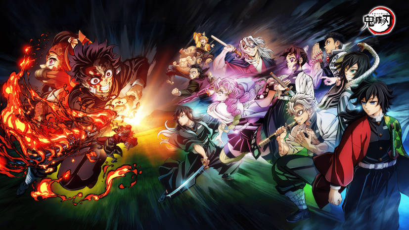
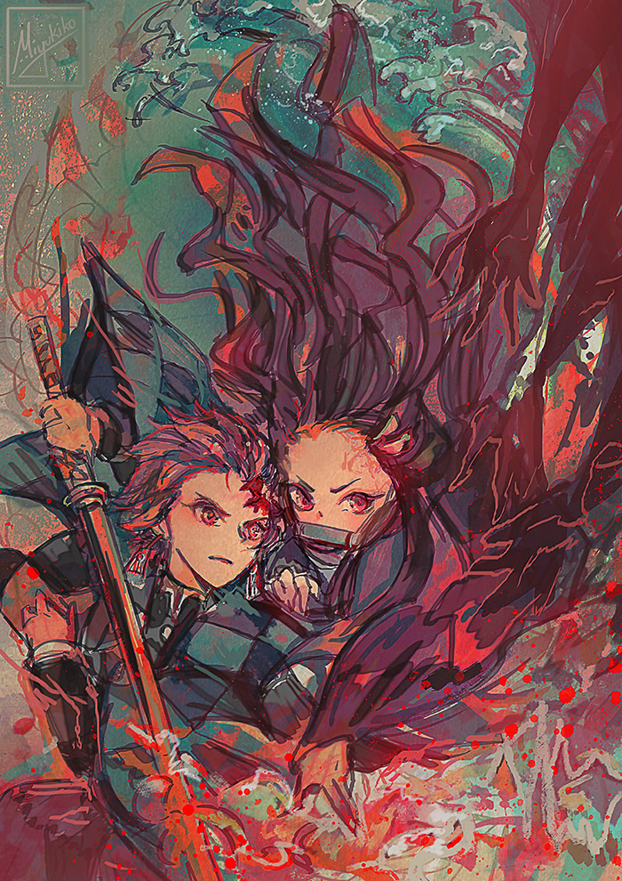

Plotholes
Outlandish Inconsistencies

A plothole is a gap or inconsistency in a story that doesn't fully add up. Whether it's a contradiction, an unexplained event, or a missing piece of logic. In anime, plotholes can range from power scaling issues and forgotten storylines to characters suddenly gaining abilities without explanation. At Otaku Odyssey, we dive deep into anime's biggest plotholes, analyzing what makes them stand out and whether they can be explained or if they truly break the story!
Demon Slayer (Kimetsu no Yaiba)
About
Demon Slayer is an amazing anime with breathtaking animation and emotional storytelling,
but even a masterpiece isn't without its inconsistencies.
Upper Moon Hierarchy Feels Inconsistent
The ranking system of the Upper Moons is supposed to be strictly based on strength, yet some matchups feel inconsistent.
🔹 Gyutaro and Daki (Upper Moon 6) nearly killed Tengen Uzui and his entire squad,
yet later Upper Moons (like Kaigaku) feel weaker in comparison.
If Akaza (Upper 3) is stronger than Doma (Upper 2) in raw strength, why isn't he ranked higher?
Possible Explanation: Strength alone isn't the only factor in rankings, furthermore obedience and loyalty aacording to Muzan play a role too. However, since the power levels aren't clearly explained, some Upper Moons feel weaker than expected.